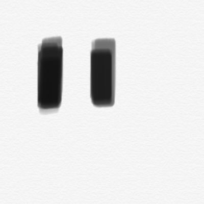

zzz's home
About
2018/04 : 徳山工業高等専門学校 情報電子工学科 入学
2023/03 : 徳山工業高等専門学校 情報電子工学科 卒業
Works
2021/05 ~ 2022/03 : SecHack365'21 開発駆動コース 川合ゼミ
「音遊びプログラミング言語 Oto」
2022/04 : 第29回コンピュータフェスティバル アプリケーション部門1位
Qualifications
2019/11 : 基本情報技術者試験 合格
2021/06 : 応用処理技術者試験 合格
2022/03 : TOEIC® Listening & Reading 730点
Links
Oto言語サポートサイト
Contact
連絡はfn.nk.2002□gmail.com (□ -> @)まで
© zzz 2021-2023